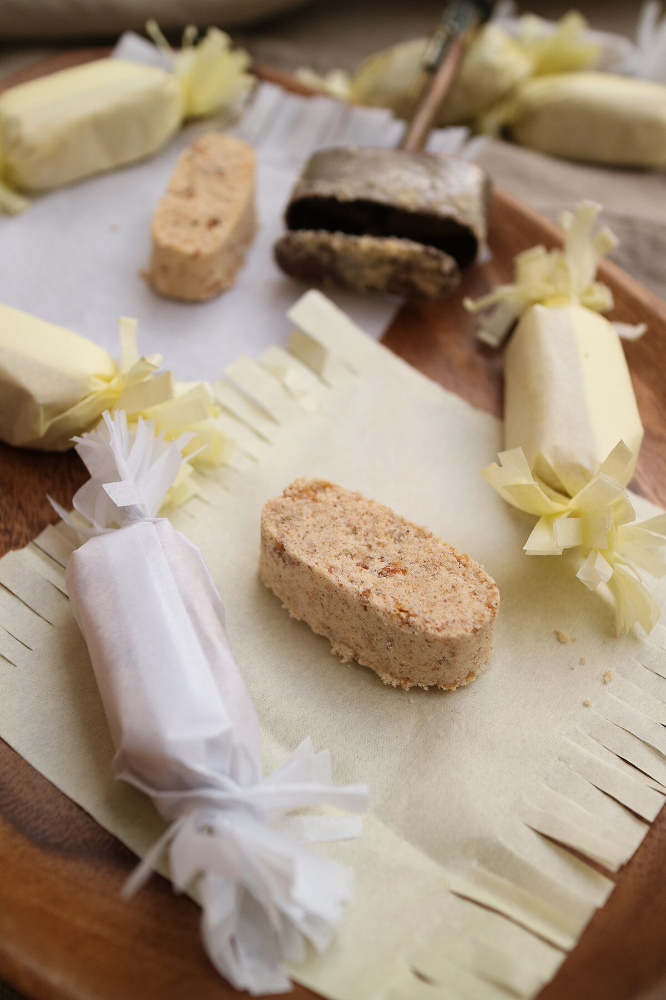

Polvoron

Polvoron:
Polvoron is a Filipino shortbread cookie made with toasted flour,
powdered milk, butter, and sugar. These bite-sized crunchy and crumbly cookies are sweet and addicting. Polvoron is commonly spelled pulburon or polboron.
It is also referred to as Filipino milk candies.
INGREDIENTS
- 4 cups Softasilk cake flour
- 2 cups powdered milk
- 2 cups sugar
- 1 cup toasted pinipig, ground
- 1 cup butter oe margarine, melted
STEPS
- Toast flour in moderate heat until light brown, stirring constantly.
- In a bowl, mix together the toasted flour, milk, sugar, pinipig and melted butter or margarine.
- Mix thoroughly.
- Using a round or oval polvoron molder, shape the mixture.
- Wrap in japanese paper or cellophane.
yield: 5 dozens